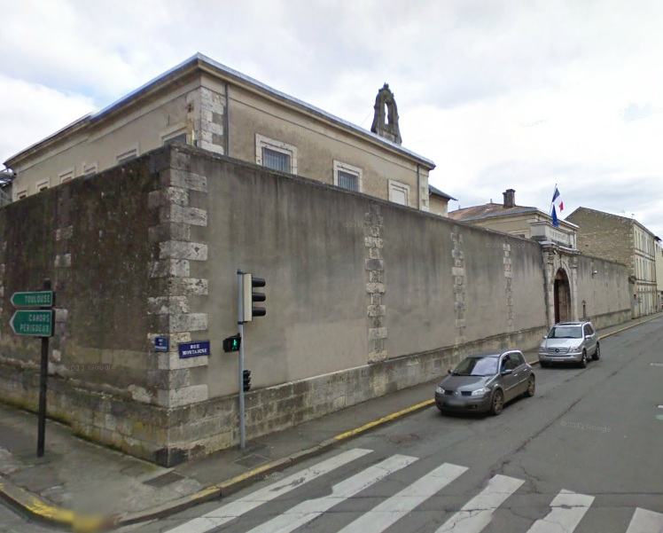
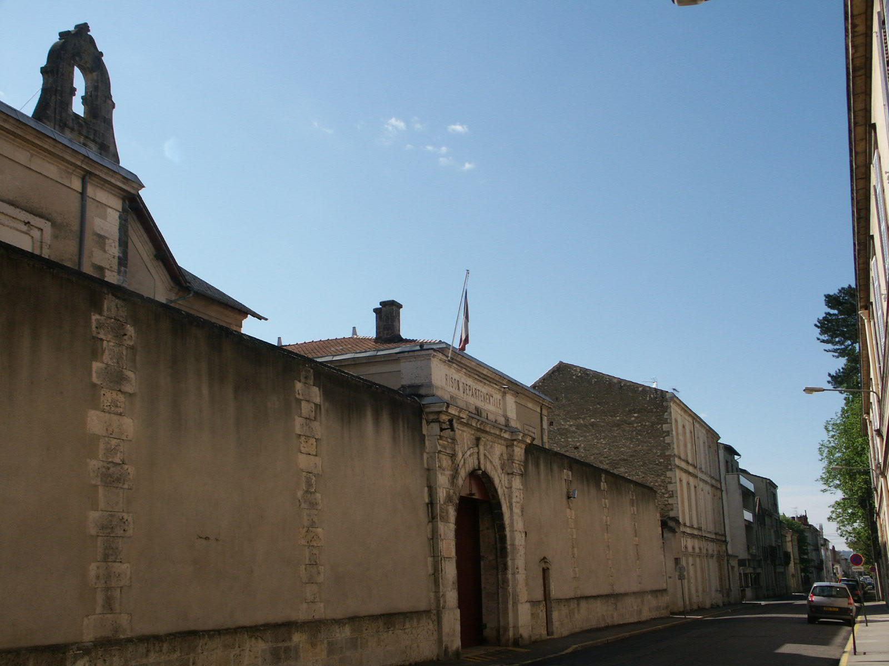
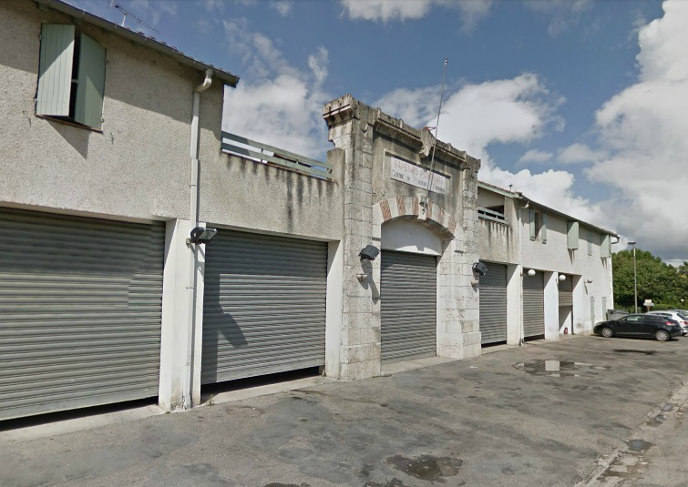
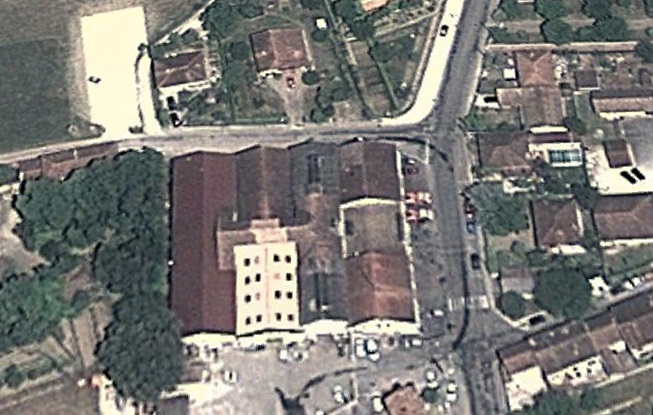
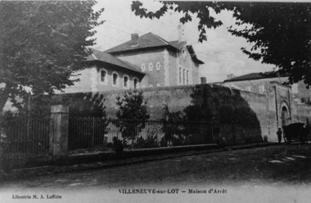

| Département | Images | Ville | Nom | Adresse | Période | Capacité | Histoire du lieu | Nombre d'exécutions |
| Lot-et-Garonne (47) |   |
Agen | Prison Montaigne | 44, rue Montaigne | En service depuis 1860 | 115 places, 14 surveillants (1962) 146 places (2015) |
En forme de croix de Lorraine sur trois niveaux, à deux pas du palais de justice. | Trois exécutions en 1941, 1943 et 1948. |
| Lot-et-Garonne (47) | Marmande | Maison d'arrêt | Rue Bayle de Seches | -1934 | A l'arrière de l'ancien tribunal (désaffecté en 1996, devenu les archives municipales). Fermée en 1926, réouverte en 1931, définitivement fermée en 1934. Probablement rasée. Actuelle école de danse Maurice Ravel. | Aucune exécution. | ||
| Lot-et-Garonne (47) |   |
Nérac | Maison d'arrêt | 17, boulevard Pierre de Coubertin | 1864-1926 | Plans de l'architecte Verdier. Bâtiments désormais occupés par la caserne des pompiers. | Aucune exécution. | |
| Lot-et-Garonne (47) | Villeneuve-sur-Lot | Maison centrale d'Eysses | Rue Pierre Doize | En service depuis 1803 | Ancienne abbaye Saint-Gervais-Saint-Protais, rachetée par l'État, la prison d'Eysses tient le rôle de centrale pour les départements d'Aquitaine (Dordogne, Gironde, Landes, Lot-et-Garonne et Basses-Pyrénées) et une partie de ceux de Midi-Pyrénées (tous, sauf le Tarn et l'Aveyron). D'abord mixte, elle voit partir ses détenues pour la centrale de Cadillac, en Gironde, en 1821. Sous l'Occupation allemande, la prison, prévue pour accueillir environ 350 détenus, en compte 1200, quasiment tous des politiques venus d'un peu partout dans la zone Sud. Ce nombre incroyable et l'esprit de résistance va conduire à une évasion de 54 détenus le 03 janvier 1944 et à une mutinerie générale le 19 février 1944, au cours de laquelle le directeur - milicien notoire - et 70 gardiens sont pris en otage. Cependant, au bout d'une demi-journée de lutte, l'intervention policière met fin à la révolte. Joseph Darnand, chef de la Milice et ami personnel du directeur, vient superviser les procès, à la tête d'une cour martiale : réclamant le sang de 50 mutins, il obtient la vie de 12 d'entre eux, passés par les armes séance tenante à l'aube du 23 février. Tous les autres prisonniers sont déportés à Dachau à compter du 30 mai suivant, plus de 200 y périront. Le mur où leurs camarades ont été fusillés est inscrit aux monuments historiques depuis 1996. | Aucune exécution. | ||
| Lot-et-Garonne (47) |  |
Villeneuve-sur-Lot | Maison d'arrêt | Boulevard Saint-Michel (Bd de la République) | 1855-1926 | Architecte : Saint-André. Détruite dans les années 1930 pour construire le théâtre. En 1999, seul subsistait l'ancienne aile nord, correspondant au quartier des femmes. | Aucune exécution. |
{kind=link}
{kind=link}
{kind=link}
{kind=link}
{kind=link}
{kind=link}
{kind=link}